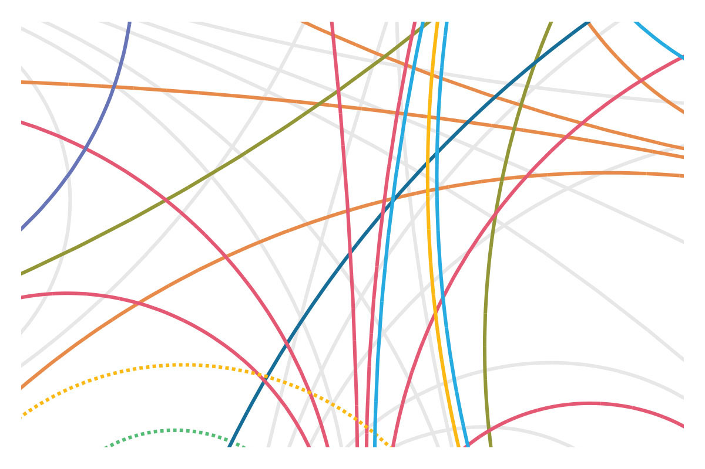

Design Language
DotGov Design Conference
Identity for a conference facilitated by AIGA DC for government designers.
The World Bank
The 2015 World Development Report discusses insights on how people make decisions and provides a framework to help development practitioners apply them to policies.


The Guardian
Commissioned by The Guardian to visualize patent lawsuits in the mobile industry.


The Way to Go
The Way to Go illuminates different forms of transportation and the infrastructure that supports them. Published by Penguin Press.


iPad UI Study
Because the input method of the iPad is a piece of multitouch glass, there's flexibility in designing user interfaces. Turning the screen off removes virtually all evidence of the various UIs, so to see these differences, we studied the only fragments that remain from using an app: fingerprints.


VH1
Logo for a foundation that strives to enhance music education in schools by donating instruments to underfunded music programs across the country.

United Nations
Diagrams and animations created for the United Nations Development Programme. The metaphor of a campus was used to explain privacy and access on UNDP's internal social network.